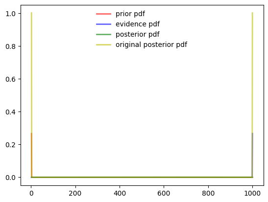

#hide
import scipy.stats as stats
import matplotlib.pyplot as plt
import numpy as np
from scipy.integrate import trapz
import sys
EPSILON = sys.float_info.epsilon
NUM_SAMPLES = 1000
plt.style.use('ggplot')Uncertain Data Types
Uncertain data types play a crucial role in robotics by addressing uncertainties in sensor measurements. For instance, in robotic localization, sensors may provide imprecise information about the robot’s position. The advantage lies in using probabilistic models to represent this uncertainty. Methodologies like Bayesian filtering help integrate sensor data and estimate the robot’s position more accurately. In software development for robotics, uncertainty-aware algorithms enhance navigation and mapping. Applications include autonomous vehicles, where uncertain data types improve decision-making in dynamic environments. However, challenges arise in developing efficient algorithms due to the computational demands of handling uncertainty in real-time robotic systems.
Efforts to create uncertain data types span various programming languages, each with its approach. In C and C++, developers often implement uncertainty by using custom data structures and libraries. They leverage pointers and structures to represent uncertain values and design algorithms for uncertainty propagation. In Julia, a high-level programming language, the focus is on mathematical simplicity and performance. The language’s flexibility allows developers to design custom data types and functions tailored to uncertain data, enhancing computational efficiency. Probabilistic programming languages like Stan and Pyro offer specialized constructs for uncertain data types. These languages enable developers to express uncertainty directly in their models, simplifying the incorporation of probabilistic reasoning. Overall, efforts in uncertain data types reflect the diverse strategies employed across languages, ranging from low-level control in C and C++ to high-level expressiveness in Julia and specialized support in probabilistic programming languages.
In paper Uncertain
TLDR
Goal
- Lets say we have a sensor reading \(x\) with value 10 we want to represent it in python we will write
x=10. - Now we have additional information that the sensor reading is not accurate and the sensor reading is around 10.
- How do you represent this uncertain information in code?
- Not only represent we would like to do matematical operations (add, subtract, power etc) with this value and still keep the uncertain information
- There are different methodology for representation of uncertain value and different ways to do it in code.
- In this blog we use the parametric representation method, where we model the uncertain information is modelled using any statistical Distribution (Normal, Laplace, exponential etc)
- For the mathematical operations on these uncertain values we then use 2 methods :
- Sampling based Monto Carlo method
- Sigma points propagation
The names of the classes and the different methods have been inspired by the Signaloid library github
Distirbution based representation
Sampling based calculations
- In these methods the uncertainty is represented using parametric distirbutions (Gaussian, Laplace, Cauchy etc.)
- We create a new data type using OOP class. We overload the mathematical operators and write code in there for calculation of the uncertainty after the mathematical operation is performed.
- For each operation we use the sampling based method to generate some NUM_SAMPLES and then we perform the underlying operation and then we use likelihood estimation method to find the parameter of the distribution of the result.
class uDoubleGaussDist:
"""
Custom datatype replicating double datatype with mathematical operators.
Attributes:
- value (float): The value stored in the uDoubleGaussDist.
Methods:
- __init__(self, value: float): Initializes the uDoubleGaussDist with a specified value.
- __add__(self, other: 'uDoubleGaussDist') -> 'uDoubleGaussDist': Defines addition operation for uDoubleGaussDist.
- __sub__(self, other: 'uDoubleGaussDist') -> 'uDoubleGaussDist': Defines subtraction operation for uDoubleGaussDist.
- __mul__(self, other: 'uDoubleGaussDist') -> 'uDoubleGaussDist': Defines multiplication operation for uDoubleGaussDist.
- __truediv__(self, other: 'uDoubleGaussDist') -> 'uDoubleGaussDist': Defines true division operation for uDoubleGaussDist.
- __str__(self) -> str: Returns the string representation of the uDoubleGaussDist.
"""
def __init__(self, value: float, sigma: float = 1e-6):
"""Initialize uDoubleGaussDist with a specified value."""
self.value = float(value)
self.sigma = float(sigma)
self.distirbution = stats.norm(value, sigma)
def __add__(self, other: 'uDoubleGaussDist') -> 'uDoubleGaussDist':
"""Define addition operation for uDoubleGaussDist."""
self_samples = self.distirbution.rvs( size=NUM_SAMPLES, random_state=123)
other_samples = other.distirbution.rvs( size=NUM_SAMPLES, random_state=123)
loc1, scale1 = stats.norm.fit(self_samples + other_samples)
return uDoubleGaussDist(loc1, scale1)
def __sub__(self, other: 'uDoubleGaussDist') -> 'uDoubleGaussDist':
"""Define subtraction operation for uDoubleGaussDist."""
self_samples = self.distirbution.rvs( size=NUM_SAMPLES, random_state=123)
other_samples = other.distirbution.rvs( size=NUM_SAMPLES, random_state=123)
loc1, scale1 = stats.norm.fit(self_samples - other_samples)
return uDoubleGaussDist(loc1, scale1)
def __mul__(self, other: 'uDoubleGaussDist') -> 'uDoubleGaussDist':
"""Define multiplication operation for uDoubleGaussDist."""
self_samples = self.distirbution.rvs( size=NUM_SAMPLES, random_state=123)
other_samples = other.distirbution.rvs( size=NUM_SAMPLES, random_state=123)
loc1, scale1 = stats.norm.fit(self_samples * other_samples)
return uDoubleGaussDist(loc1, scale1)
def __truediv__(self, other: 'uDoubleGaussDist') -> 'uDoubleGaussDist':
"""Define true division operation for uDoubleGaussDist."""
if other.value != 0:
self_samples = self.distirbution.rvs( size=NUM_SAMPLES, random_state=123)
other_samples = other.distirbution.rvs( size=NUM_SAMPLES, random_state=123)
loc1, scale1 = stats.norm.fit(self_samples / other_samples)
return uDoubleGaussDist(loc1, scale1)
else:
raise ValueError("Division by zero")
def __str__(self) -> str:
"""Return the string representation of uDoubleGaussDist."""
return str(self.value)
def display(self):
fig, ax = plt.subplots(1, 1)
# create samples
x = np.linspace(self.distirbution.ppf(0.01), self.distirbution.ppf(0.99), 100)
ax.plot(x, self.distirbution.pdf(x), lw=5, alpha=0.6, label='pdf')
ax.set_xlim([x[0], x[-1]])
ax.legend(loc='best', frameon=False)
plt.show()
# Example usage:
a = uDoubleGaussDist(2.5)
b = uDoubleGaussDist(1.5)
result = a + b
print(result) # Output: 4.0
result = a - b
print(result) # Output: 4.0
result = a * b
print(result) # Output: 4.0
result = a / b
print(result) # Output: 4.03.9999999208717276
1.0
3.749999841744459
1.6666666842510243%timeit a+b1.61 ms ± 296 µs per loop (mean ± std. dev. of 7 runs, 1000 loops each)%timeit 2.5+1.515.6 ns ± 3.94 ns per loop (mean ± std. dev. of 7 runs, 100000000 loops each)result.display()Bayes Laplace Rule
- The story here is we have 2 sensors measuring a single value.
- Sensor 1 has a particular uncertainty
- sensor 2 is more accurate and hasa lesser uncertainty
- But both sensors are providing information of the same entity.
How will you merge uncertain information of same value from 2 different sources ?
ANSWER : Bayes Laplace Rule
def uDoubleBayesLaplace(prior: uDoubleGaussDist, evidence: uDoubleGaussDist) -> uDoubleGaussDist:
"""
Perform Bayesian inference using Laplace approximation.
Parameters:
- prior (uDoubleGaussDist): Prior distribution.
- evidence (uDoubleGaussDist): Evidence distribution.
Returns:
- uDoubleGaussDist: Posterior distribution.
This function calculates the posterior distribution using Bayes Theorem
based on the provided prior and evidence distributions. It generates samples
from the posterior distribution and returns a uDoubleGaussDist object representing
the posterior distribution.
Example:
prior = uDoubleGaussDist(2.5, 0.1)
evidence = uDoubleGaussDist(1.5, 0.2)
posterior = uDoubleBayesLaplace(prior, evidence)
"""
min_sample = min(prior.distirbution.ppf(0.01),
evidence.distirbution.ppf(0.01),
prior.distirbution.ppf(0.99),
evidence.distirbution.ppf(0.99))
max_sample = max(prior.distirbution.ppf(0.01),
evidence.distirbution.ppf(0.01),
prior.distirbution.ppf(0.99),
evidence.distirbution.ppf(0.99))
#Generate uniform samples in the x axis
samples = np.linspace(min_sample,max_sample, NUM_SAMPLES)
#Calculate likelihood for each sample for prior and the evidence
prior_pdf = prior.distirbution.pdf(samples)+EPSILON #Adding epsilon to avoid zeros for pdf
evidence_pdf = evidence.distirbution.pdf(samples)+EPSILON
#Multiplying the likelihoods
unnormalized_posterior = prior_pdf * evidence_pdf
#Normalizing the posterior by calculating the area and dividing by the area
area = trapz(unnormalized_posterior, samples)
posterior = unnormalized_posterior / area
print ("Posterior mean ", samples[np.argmax(posterior)])
#generating samples from pdf
generated_samples = np.random.choice(samples, size=NUM_SAMPLES, p=posterior/np.sum(posterior))
print ("Calculated Posterior mean ", np.mean(generated_samples))
return uDoubleGaussDist(np.mean(generated_samples), np.std(generated_samples))
prior = uDoubleGaussDist(2.5,0.1)
evidence = uDoubleGaussDist(1.5,0.2)
posterior = uDoubleBayesLaplace(prior, evidence)Posterior mean 2.2992357760285844
Calculated Posterior mean 2.3000294910807897def plotuDoubleBayesLaplace(prior, evidence, posterior):
fig, ax = plt.subplots(1, 1)
min_sample = min(prior.distirbution.ppf(0.01),
evidence.distirbution.ppf(0.01),
prior.distirbution.ppf(0.99),
evidence.distirbution.ppf(0.99))
max_sample = max(prior.distirbution.ppf(0.01),
evidence.distirbution.ppf(0.01),
prior.distirbution.ppf(0.99),
evidence.distirbution.ppf(0.99))
samples = np.linspace(min_sample,max_sample, NUM_SAMPLES)
prior_pdf = prior.distirbution.pdf(samples)+EPSILON #Adding epsilon to avoid zeros for pdf
evidence_pdf = evidence.distirbution.pdf(samples)+EPSILON
posterior_pdf = posterior.distirbution.pdf(samples)+EPSILON
unnormalized_posterior = prior_pdf * evidence_pdf
area = trapz(unnormalized_posterior, samples)
original_posterior = unnormalized_posterior / area
ax.plot(samples, prior_pdf,
'r-', lw=2, alpha=0.6, label='prior pdf')
ax.plot(samples, evidence_pdf,
'b-', lw=2, alpha=0.6, label='evidence pdf')
ax.plot(samples, posterior_pdf,
'g-', lw=2, alpha=0.6, label='posterior pdf')
ax.plot(samples, original_posterior,
'-', lw=2, alpha=0.6, label='original posterior pdf')
ax.legend(loc='best', frameon=False)
# Save files in pdf and eps format
plt.savefig("sampling_bayes_laplace_rule.png", dpi=150)
plotuDoubleBayesLaplace(prior, evidence, posterior)Corner Case
Need things to improve.
- When the sigma is very low as 1e-6 .
- PDF values become zero at all places expect for the
- When the values are very far apart like 1 and 1000
prior = uDoubleGaussDist(2.5)
evidence = uDoubleGaussDist(1.5)
posterior = uDoubleBayesLaplace(prior, evidence)
plotuDoubleBayesLaplace(prior, evidence, posterior)
prior = uDoubleGaussDist(2.5, 0.1)
evidence = uDoubleGaussDist(1000, 0.1)
posterior = uDoubleBayesLaplace(prior, evidence)
plotuDoubleBayesLaplace(prior, evidence, posterior)
Possible solutions (Not working)
- Sample differently for both the prior and the evidence
- #TODO The estimated posterior and multiplied posterior are differnt .
- because of the differnt precision the sample generation process is not working
- Need an alternative to the sample generation from pdf
def uDoubleBayesLaplace(prior, evidence):
samples = np.sort( np.append(np.linspace(prior.distirbution.ppf(0.01),
prior.distirbution.ppf(0.99), NUM_SAMPLES),
np.linspace(evidence.distirbution.ppf(0.01),
evidence.distirbution.ppf(0.99), NUM_SAMPLES) ))
prior_pdf = prior.distirbution.pdf(samples) #Adding epsilon to avoid zeros for pdf
evidence_pdf = evidence.distirbution.pdf(samples)
unnormalized_posterior = prior_pdf * evidence_pdf
area = trapz(unnormalized_posterior, samples)
posterior = unnormalized_posterior / area
print ("Posterior mean ", samples[np.argmax(posterior)])
#generating samples from pdf
generated_samples = np.random.choice(np.linspace(min(samples),
max(samples),
num=NUM_SAMPLES*2),
size=NUM_SAMPLES*2,
p=posterior/np.sum(posterior))
print ("Calculated Posterior mean ", np.mean(generated_samples))
return uDoubleGaussDist(np.mean(generated_samples), np.std(generated_samples))
prior = uDoubleGaussDist(2.5,0.1)
evidence = uDoubleGaussDist(1.5,0.2)
posterior = uDoubleBayesLaplace(prior, evidence)Posterior mean 2.299966684304196
Calculated Posterior mean 2.041209314588317def plotuDoubleBayesLaplace(prior, evidence, posterior):
fig, ax = plt.subplots(1, 1)
samples = np.sort( np.append( np.linspace(prior.distirbution.ppf(0.01),
prior.distirbution.ppf(0.99), NUM_SAMPLES),
np.linspace(evidence.distirbution.ppf(0.01),
evidence.distirbution.ppf(0.99), NUM_SAMPLES) ))
prior_pdf = prior.distirbution.pdf(samples) #Adding epsilon to avoid zeros for pdf
evidence_pdf = evidence.distirbution.pdf(samples)
unnormalized_posterior = prior_pdf * evidence_pdf
area = trapz(unnormalized_posterior, samples)
original_posterior = unnormalized_posterior / area
posterior_pdf = posterior.distirbution.pdf(samples)
ax.plot(samples, prior_pdf,
'r-', lw=2, alpha=0.6, label='prior pdf')
ax.plot(samples, evidence_pdf,
'b-', lw=2, alpha=0.6, label='evidence pdf')
ax.plot(samples, posterior_pdf,
'g-', lw=2, alpha=0.6, label='posterior pdf')
ax.plot(samples, original_posterior,
'y-', lw=2, alpha=0.6, label='original posterior pdf')
ax.legend(loc='best', frameon=False)
plotuDoubleBayesLaplace(prior, evidence, posterior)With Unscented Approaches
#TODO ## Using Sigma Points
class uDoubleGaussDist:
"""
Custom datatype replicating double datatype with mathematical operators.
Attributes:
- value (float): The value stored in the uDoubleGaussDist.
Methods:
- __init__(self, value: float): Initializes the uDoubleGaussDist with a specified value.
- __add__(self, other: 'uDoubleGaussDist') -> 'uDoubleGaussDist': Defines addition operation for uDoubleGaussDist.
- __sub__(self, other: 'uDoubleGaussDist') -> 'uDoubleGaussDist': Defines subtraction operation for uDoubleGaussDist.
- __mul__(self, other: 'uDoubleGaussDist') -> 'uDoubleGaussDist': Defines multiplication operation for uDoubleGaussDist.
- __truediv__(self, other: 'uDoubleGaussDist') -> 'uDoubleGaussDist': Defines true division operation for uDoubleGaussDist.
- __str__(self) -> str: Returns the string representation of the uDoubleGaussDist.
"""
def __init__(self, value: float, sigma: float = 1e-6):
"""Initialize uDoubleGaussDist with a specified value."""
self.value = float(value)
self.sigma = float(sigma)
self.distirbution = stats.norm(value, sigma)
def __add__(self, other: 'uDoubleGaussDist') -> 'uDoubleGaussDist':
"""Define addition operation for uDoubleGaussDist."""
self_samples = self.distirbution.rvs( size=100, random_state=123)
other_samples = other.distirbution.rvs( size=100, random_state=123)
loc1, scale1 = stats.norm.fit(self_samples + other_samples)
return uDoubleGaussDist(loc1, scale1)
def __sub__(self, other: 'uDoubleGaussDist') -> 'uDoubleGaussDist':
"""Define subtraction operation for uDoubleGaussDist."""
self_samples = self.distirbution.rvs( size=100, random_state=123)
other_samples = other.distirbution.rvs( size=100, random_state=123)
loc1, scale1 = stats.norm.fit(self_samples - other_samples)
return uDoubleGaussDist(loc1, scale1)
def __mul__(self, other: 'uDoubleGaussDist') -> 'uDoubleGaussDist':
"""Define multiplication operation for uDoubleGaussDist."""
self_samples = self.distirbution.rvs( size=100, random_state=123)
other_samples = other.distirbution.rvs( size=100, random_state=123)
loc1, scale1 = stats.norm.fit(self_samples * other_samples)
return uDoubleGaussDist(loc1, scale1)
def __truediv__(self, other: 'uDoubleGaussDist') -> 'uDoubleGaussDist':
"""Define true division operation for uDoubleGaussDist."""
if other.value != 0:
self_samples = self.distirbution.rvs( size=100, random_state=123)
other_samples = other.distirbution.rvs( size=100, random_state=123)
loc1, scale1 = stats.norm.fit(self_samples / other_samples)
return uDoubleGaussDist(loc1, scale1)
else:
raise ValueError("Division by zero")
def __str__(self) -> str:
"""Return the string representation of uDoubleGaussDist."""
return str(self.value)
# Example usage:
a = uDoubleGaussDist(2.5)
b = uDoubleGaussDist(1.5)
result = a + b
print(result) # Output: 4.0
result = a - b
print(result) # Output: 4.0
result = a * b
print(result) # Output: 4.0
result = a / b
print(result) # Output: 4.0Notes
#hide
import numpy as np
import scipy.stats as stats
import matplotlib.pyplot as plt
from scipy.integrate import trapz
mus=[8, 15]
sigmas=[2, 1]
# prior = stats.t(2, loc=mus[0], scale=sigmas[0])
# likelihood = stats.t(2, loc=mus[1], scale=sigmas[1])
# prior = stats.cauchy(loc=mus[0], scale=sigmas[0])
# likelihood = stats.cauchy(loc=mus[1], scale=sigmas[1])
prior = stats.norm(mus[0], sigmas[0])
likelihood = stats.norm(mus[1], sigmas[1])
min_sample = min(prior.ppf(0.01), likelihood.ppf(0.01), prior.ppf(0.99), likelihood.ppf(0.99))
max_sample = max(prior.ppf(0.99), likelihood.ppf(0.99), prior.ppf(0.01), likelihood.ppf(0.01))
samples = np.linspace(3,30, 1000)
fig, ax = plt.subplots(1, 1)
ax.plot(samples, prior.pdf(samples),
'r-', lw=2, alpha=0.6, label='prior pdf')
ax.plot(samples, likelihood.pdf(samples),
'b-', lw=2, alpha=0.6, label='likelihood pdf')
ax.legend(loc='best', frameon=False)#hide
prior_pdf = prior.pdf(samples)
np.sum((samples ** 3) * prior_pdf)708.7380350553744#hide
prior_pdf = prior.pdf(samples)
stats.moment(pdf_, moment = 2) #variance0.0038653585400454265#hide
fig, ax = plt.subplots(1, 1)
prior_samples = prior.rvs( size=1000, random_state=123)
likelihood_samples = likelihood.rvs( size=1000, random_state=123)
unnormalized_samples = prior_samples + likelihood_samples
#area = trapz(unnormalized_posterior, samples)
loc1, scale1 = stats.norm.fit(prior_samples + likelihood_samples)
posterior = stats.norm(loc1, scale1)
ax.plot(samples, prior.pdf(samples),
'r-', lw=2, alpha=0.6, label='prior pdf')
ax.plot(samples, likelihood.pdf(samples),
'b-', lw=2, alpha=0.6, label='likelihood pdf')
ax.plot(samples, posterior.pdf(samples),
'g-', lw=2, alpha=0.6, label='posterior pdf')
ax.legend(loc='best', frameon=False)#hide
print ("prior ", prior.ppf(0.01), (prior.ppf(0.01)+prior.ppf(0.99))/2, prior.ppf(0.99))
print ("likelihood ", likelihood.ppf(0.01), (likelihood.ppf(0.01)+likelihood.ppf(0.99))/2, likelihood.ppf(0.99))
print ("posterior ", posterior.ppf(0.01), (posterior.ppf(0.01)+posterior.ppf(0.99))/2, posterior.ppf(0.99), loc1)
lower_sum = prior.ppf(0.01)+likelihood.ppf(0.01)
upper_sum = prior.ppf(0.99)+likelihood.ppf(0.99)
print ("posterior est ", lower_sum, (lower_sum+upper_sum)/2, upper_sum, loc1)prior 3.3473042519183185 8.0 12.652695748081682
likelihood 12.673652125959158 15.0 17.32634787404084
posterior 15.896767710955256 22.88130759175763 29.865847472560002 22.88130759175763
posterior est 16.020956377877475 23.0 29.979043622122525 22.88130759175763Bayes
mus=[2.5, 1.5]
sigmas=[1e-2, 1e-2]
# prior = stats.t(2, loc=mus[0], scale=sigmas[0])
# likelihood = stats.t(2, loc=mus[1], scale=sigmas[1])
# prior = stats.cauchy(loc=mus[0], scale=sigmas[0])
# likelihood = stats.cauchy(loc=mus[1], scale=sigmas[1])
prior = stats.norm(mus[0], sigmas[0])
likelihood = stats.norm(mus[1], sigmas[1])
min_sample = min(prior.ppf(0.01), likelihood.ppf(0.01), prior.ppf(0.99), likelihood.ppf(0.99))
max_sample = max(prior.ppf(0.99), likelihood.ppf(0.99), prior.ppf(0.01), likelihood.ppf(0.01))
samples = np.linspace(min_sample,max_sample, 100)
fig, ax = plt.subplots(1, 1)
prior_pdf = prior.pdf(samples)
likelihood_pdf = likelihood.pdf(samples)
unnormalized_posterior = prior_pdf * likelihood_pdf
area = trapz(unnormalized_posterior, samples)
posterior = unnormalized_posterior / area
ax.plot(samples, prior_pdf,
'r-', lw=2, alpha=0.6, label='prior pdf')
ax.plot(samples, likelihood_pdf,
'b-', lw=2, alpha=0.6, label='likelihood pdf')
ax.plot(samples, posterior,
'g-', lw=5, alpha=0.3, label='posterior pdf')
ax.legend(loc='best', frameon=False)
print (posterior)RuntimeWarning: invalid value encountered in divide
posterior = unnormalized_posterior / area[nan nan nan nan nan nan nan nan nan nan nan nan nan nan nan nan nan nan
nan nan nan nan nan nan nan nan nan nan nan nan nan nan nan nan nan nan
nan nan nan nan nan nan nan nan nan nan nan nan nan nan nan nan nan nan
nan nan nan nan nan nan nan nan nan nan nan nan nan nan nan nan nan nan
nan nan nan nan nan nan nan nan nan nan nan nan nan nan nan nan nan nan
nan nan nan nan nan nan nan nan nan nan]#Hide
posterior_lower = samples[np.argmax(prior_pdf>0.01)]
print (posterior_lower)3.3473042519183185#Hide
posterior_upper = samples[-np.argmax(np.flip(prior_pdf)>0.01)]
print (posterior_upper)12.949071588325708#Hide
posterior_mean = samples[np.argmax(prior_pdf)]
print (posterior_mean)8.006985459292492#Hide
posterior_variance = (0.01*(posterior_lower-posterior_mean)**2 + 0.01*(posterior_upper - posterior_mean)**2)/2
posterior_sd = np.sqrt(posterior_variance)
print (posterior_variance)
print (posterior_sd)0.23068422130569277
0.4802959726103195#Hide
prior_samples = prior.rvs(100)
np.std(prior_samples*(1+prior_pdf))2.1604512762874606#Hide
generated_samples = np.random.choice(samples, size=100, p=prior_pdf/np.sum(prior_pdf))
np.std(generated_samples)2.006476037836466